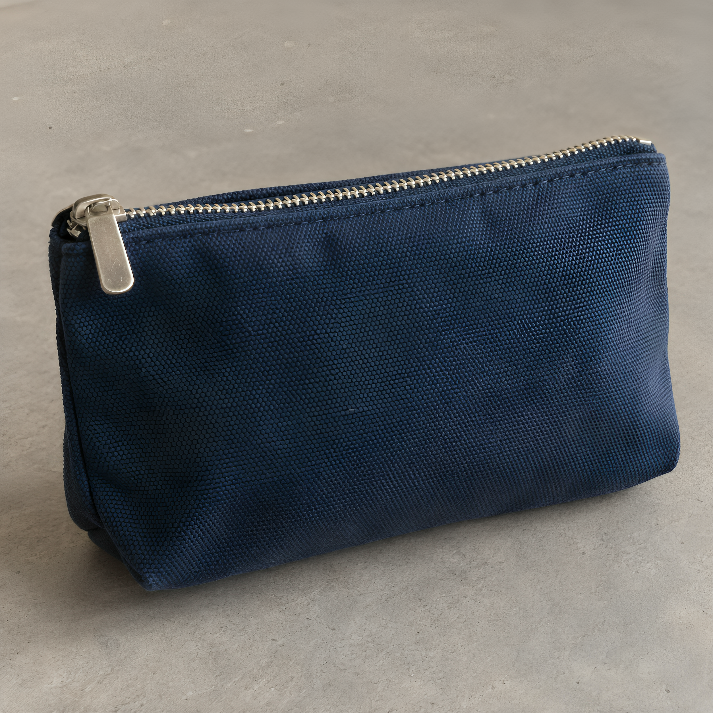

Home / One pouch, two image enhancers
One pouch, two image enhancers
We processed the same synthetic pouch image with Let's Enhance Prime and Cutout.pro Quality. You can inspect both downloads and the source.
VYRA Production · Tested September 26, 2026 · No affiliate links or paid partnerships in this article.
Open each file


{kind=link}

The free Cutout.pro preview was 750 × 750 pixels. It is not the 1254 × 1254 source and is not shown as a comparable full-size output here.
What happened in each run
| Observation | Let's Enhance | Cutout.pro |
|---|---|---|
| Selected mode | Prime · Auto size; Light AI and background removal off | Image Enhancer · Quality |
| Downloaded output | 1924 × 1924 JPG with vendor watermark | 2508 × 2508 PNG HD result |
| Account credits | Balance 10 → 9, one Let's Enhance credit | Balance 5 → 3, two Cutout.pro image credits |
Credits are different units sold by different providers. The numbers above are observed account deductions, not comparable euro prices or a value ranking. Check each provider's current plans before buying.
What to look for
Inspect the zipper, woven material and edges at similar display sizes, then open the full files to look for artifacts. In the Cutout.pro result, the weave appears more pronounced and a little more regular in places. In the Let's Enhance result, the texture also looks stronger and the free download retains a watermark. Either result may contain newly generated detail that was absent from the source.
We cannot judge text fidelity: the sample contains no product label. We also have not checked accuracy against a physical item, camera photo, other enhancement modes or paid plans. This experiment shows two specific outputs, not a general winner.
Read the full Let's Enhance test for its settings. For current tools and limits visit Let's Enhance and Cutout.pro; these are ordinary links without affiliate tracking. For corrections, email vyra.production@gmail.com.